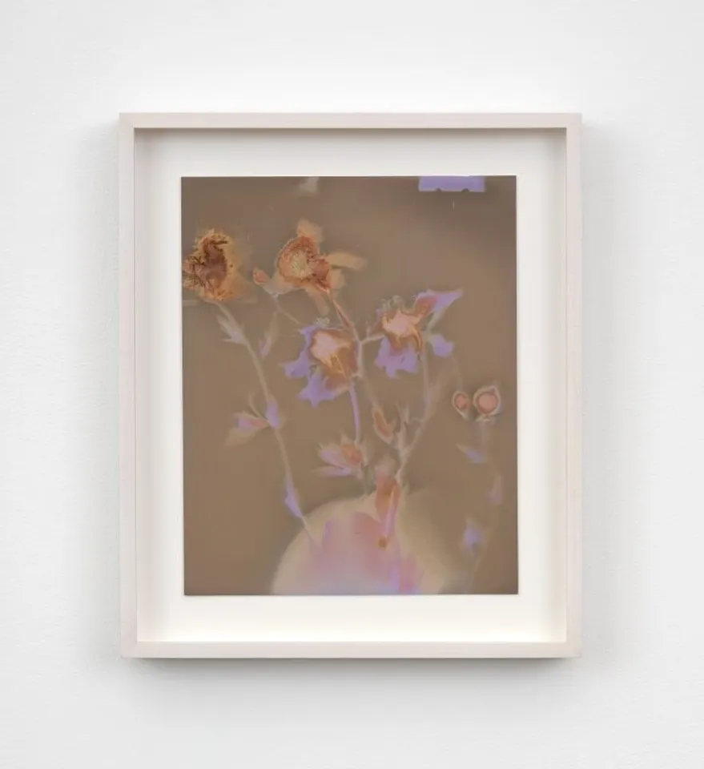
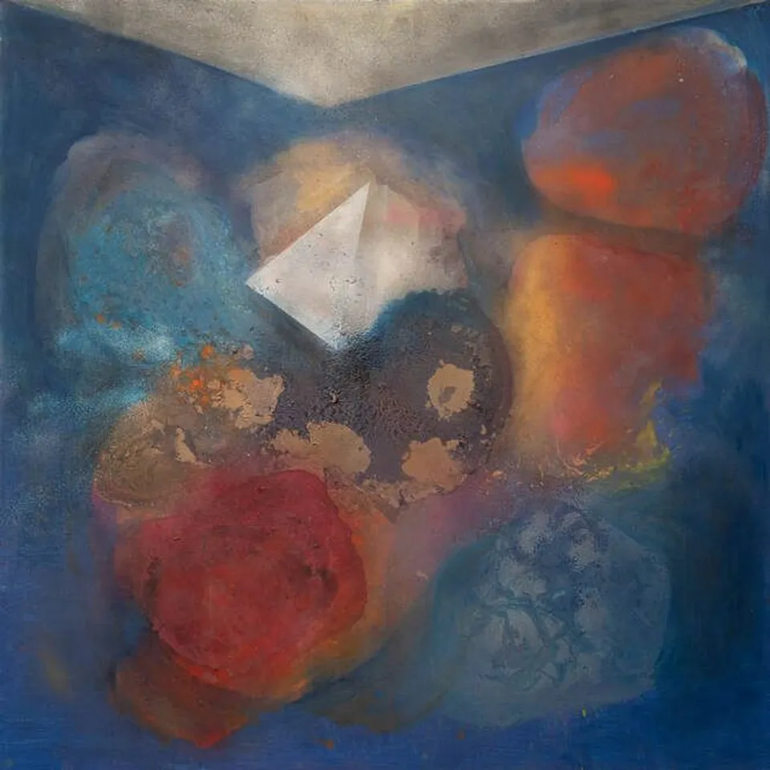
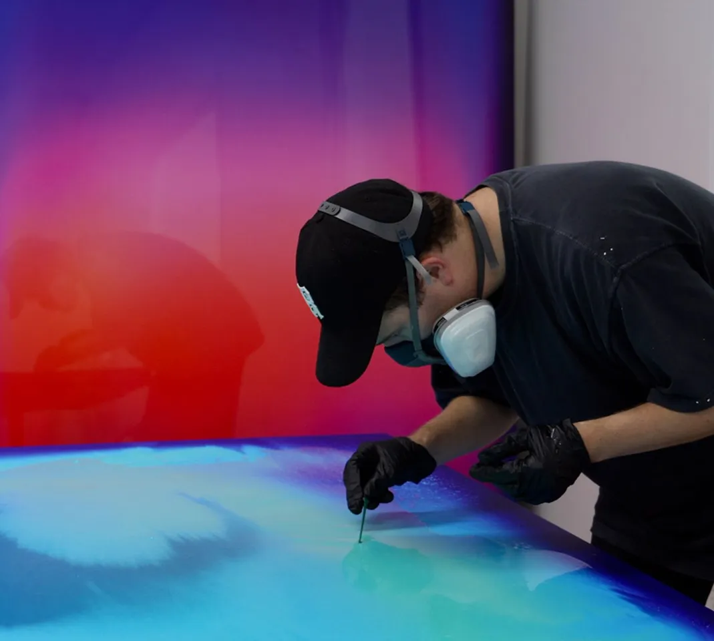

Artists to Watch
-
Maysha Mohamedi
Vibrant and playful, Mohamedi’s innovative practice points toward a new mode of atmospheric abstraction that registers certain conditions specific to Los Angeles—and American life as a whole—in the early 21st century.
-
Akea Brionne
Akea Brionne is an interdisciplinary researcher and artist, working at the intersection of lens and fiber based media. Her practice explores the relationship between colonial and imperialist history and their impact on identity politics, cultural storytelling, memory, and assimilation. Her work analyzes this primarily through the observation within the African Diaspora, with a particular emphasis on Creole culture.
-
Stephanie Syjuco
Stephanie Syjuco works in photography, sculpture, and installation, moving from handmade and craft-inspired mediums to digital editing and archive excavations. Recently, she has focused on how photography and image-based processes are implicated in the construction of racialized, exclusionary narratives of history and citizenship.
LA Based Exhibitions
-

Lily Kwong. Subterrestrial
Learn More -

Bonita Helmer. Theory of Everything
Learn More -

Nick Thomm. Sudden Synesthesia
Learn More